Implementation Overview
In Bonita Studio, there are several steps that must be completed in order to successfully execute the model. To
add data to an activity, follow these steps: click on the desired activity, then navigate to the "Execution"
tab. Here, you can find all of the necessary information that can be used during the execution of the activity.
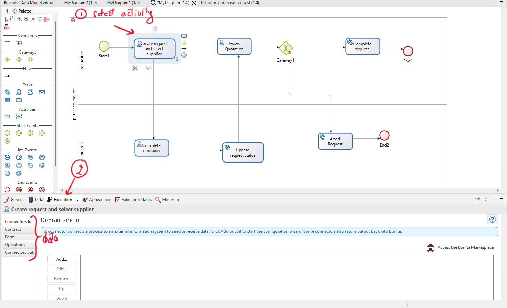
In this tutorial, we will focus on the concepts of "Contract", "Form", and "Operations".
-
Contract: is where you can add attributes that connect to a form to retrieve user inputs. This
input data is later used within the "Operations".
-
Form: Where we can define a form that is connected to the "Contract".
-
Operations: An operation updates the value of a variable after an activity is performed.
Operations are executed in the order they are listed.
The left operand is the variable that needs to be changed, and the right operand is the value. You can
also find different operator types, such as "Takes value of" to get the value of the right operand, and
"Use a Java method" to manipulate business data using a Java method.
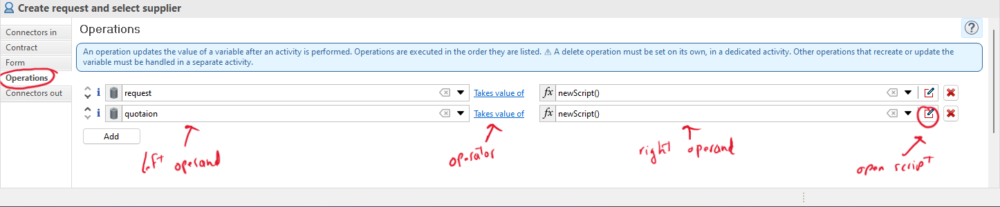
Within the script you can access the contract, the business variable and the process variable.
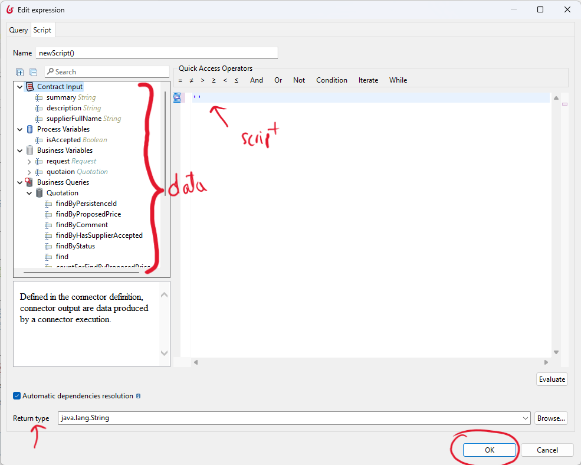
Implementation of the process model
In this exercise, you should start by the implementation phase. The first step is to define the contacts and
operations, and later to add forms.
Process description
A user fills out a procurement request (including a summary and description) and identifies a supplier. This
request is then sent to the supplier for a quotation. The supplier should add the following information to the
quotation: price, comments, and whether they accept or not. The status of the quotation will automatically
change to 'completed.'
After completion, the quotations are sent back to the requester for review and selection. Before starting the
review process, the status of the request will be changed to 'pending for review.' During the review of the
quotation, the requester should either accept or reject it. Finally, based on the decision of the requester, the
request status will change to 'completed' or 'abort.'
To effectively implement the process, developers must understand how the information is conceptually structured
and arranged within each class (suppliers, quotations, and requests) and how the process interacts with it
Add contacts and their respective operations.
You need to begin adding the data to each activity:
-
Activity "Create request and select supplier"
We need to create two main objects in this activity:
-
Request with the summary and description attributes.
-
Quotation with the create request and selected supplier.
Therefore, we need to obtain the request information from the user, and the supplier should be selected
from the database before creating the new quotation.
So, in Bonita, the user's data is presented in a contract. We have three contract objects: the
description and summary of the request, and the supplier's full name to retrieve the supplier object
from the database.
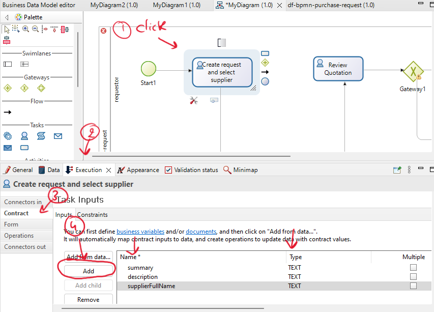
After adding the contract, we can include the data operation to create a new request and then a new
quotation connected to both the request object and a supplier object.
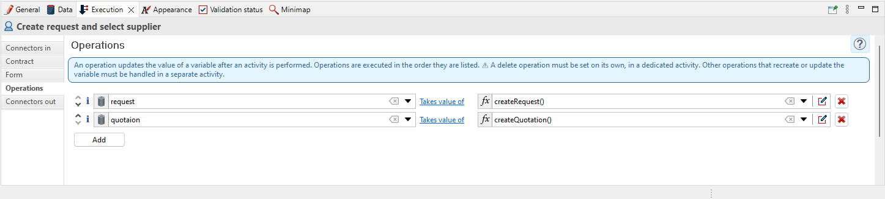
In the first script, you should retrieve information from the contracts (description and summary) to
create a new request.
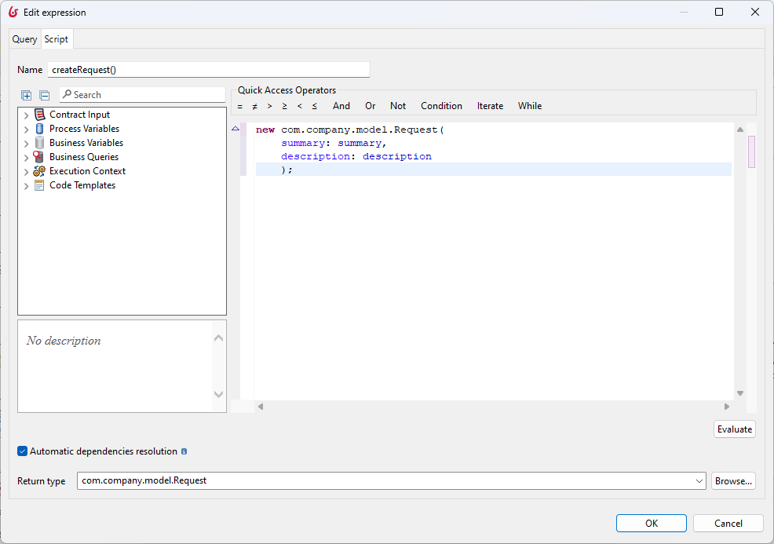
In the second script, you should retrieve the supplier based on the supplierFullName from the contracts
and then create a quotation that is connected to both the request and the supplier.
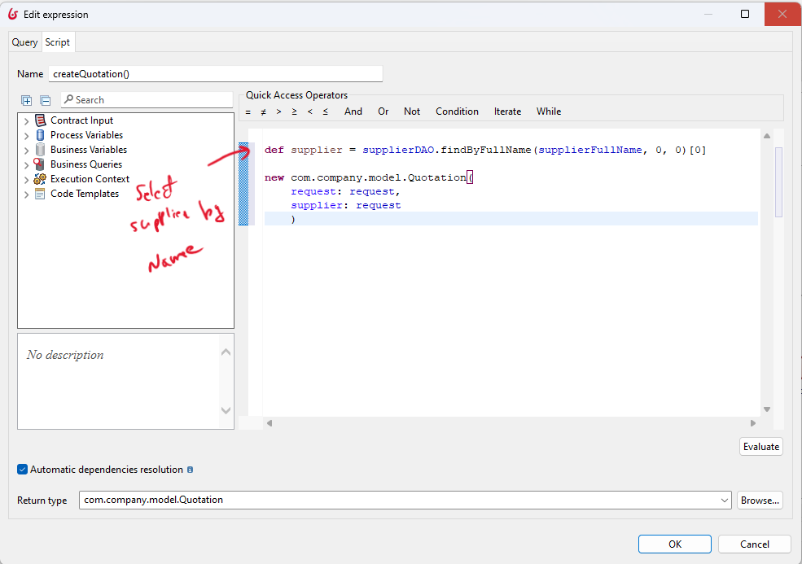
-
Activity "Complete quotation"
In this activity, the supplier (represented by the lane) should add information about the quotation. This means that this activity is for updating the quotation created in the first activity.
Find the data object for this activity from the process description.
Here is an example of some of the information that needs to be added to this activity.
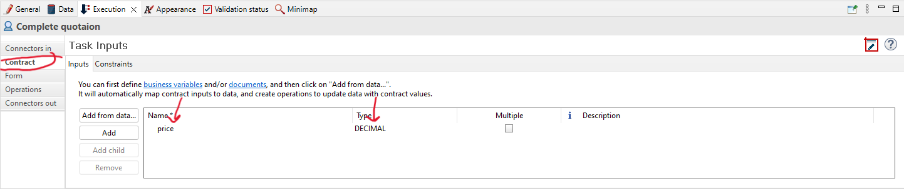
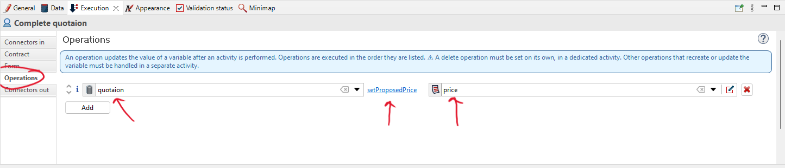
You should retrieve additional data information from the process description and include it within the activity.
-
Activity "Update request status"
"Extract the data information for this activity from the process description, then add it to this activity.
-
Activity "Review quotation"
In this activity, there is one contract in place.
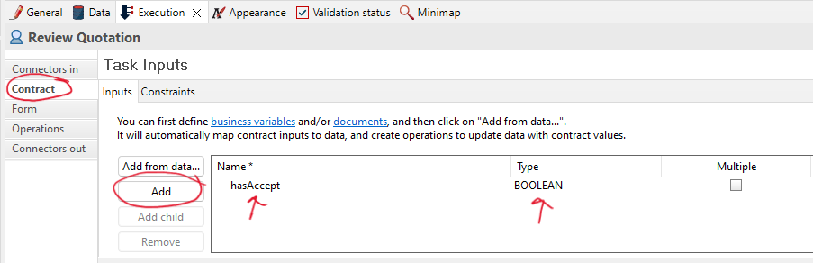
This activity can be modeled in two ways:
-
The first way is to review the request and update it based on whether it is accepted or not. Then, you can use the request attribute (isAccepted) to make a decision.
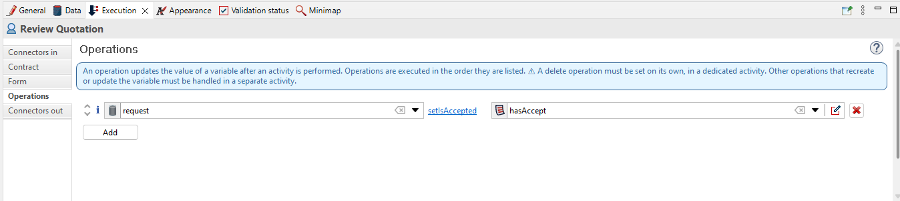
-
In another way, we can define the process variable, which will be used later in the gateway, and then update the request based on whether it is accepted or not.
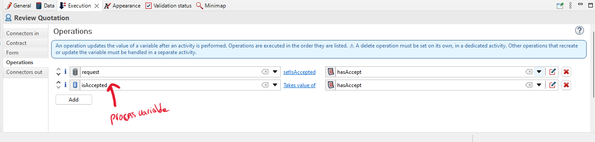
-
Gateway after the activity "Review quotation"
The conditions are added to the sequence flow after the gateway, determining the flow's path.
Click on the sequence flow, then click on 'General,' and add the expression (conditions).
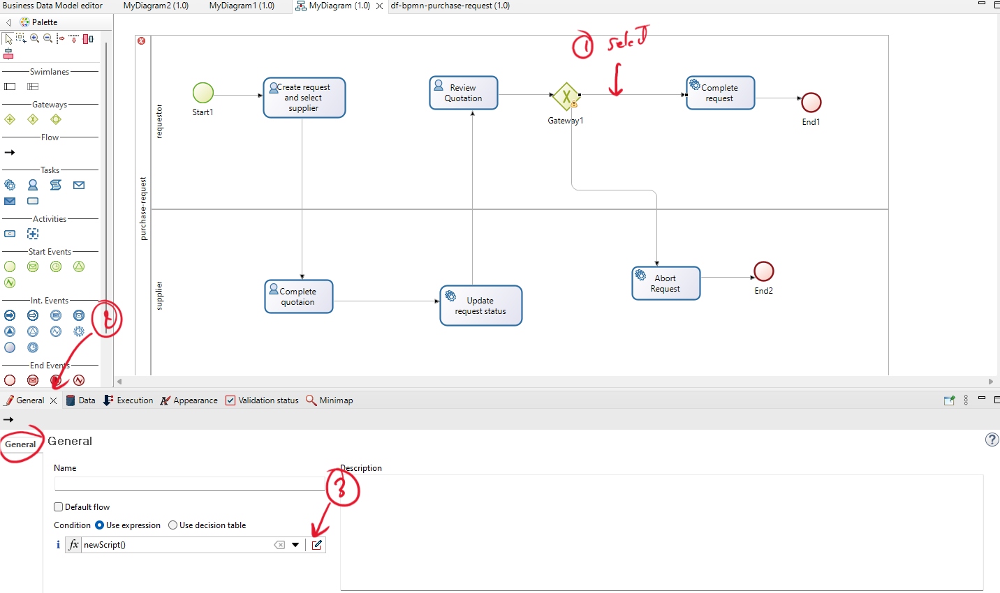
The expression should be defined based on a variable that has already been defined in the activities. If you used the second way to define the process variable (isAccepted) in the last activity, the conditions (script) should be as follows:
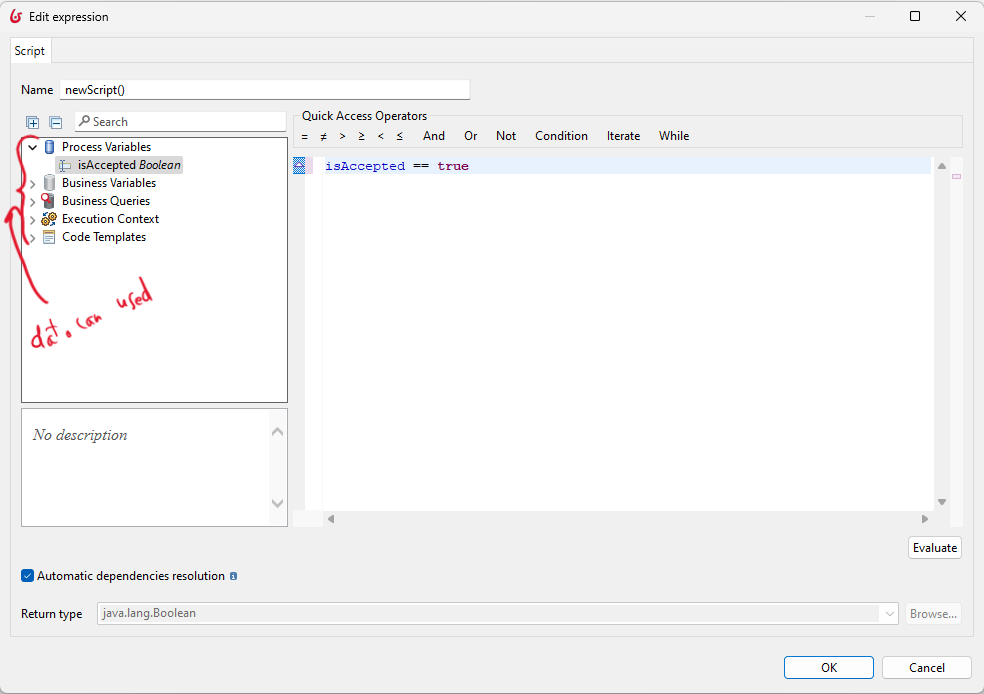
Alternatively, you should add the variable you are using to define the condition, such as an attribute of business data.
-
Activity "Complete request"
Extract the data information for this activity from the process description, then add it to this activity.
-
Activity "Abort request"
Extract the data information for this activity from the process description, then add it to this activity.
Add forms
You should add a form only for activities with the type 'Human'.
-
Activity "Create request and select supplier"
After selecting the activity, go to the 'Execution' tab, and then click on the edit icon within the 'Form'.
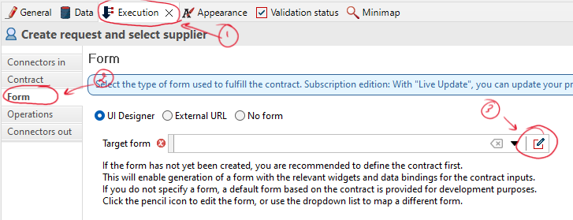
Now, you can edit the name of the form and then save it.
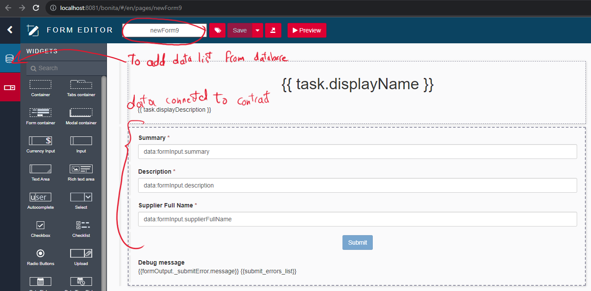
In this example, you should add the list of suppliers by clicking on the database icon and selecting 'supplier.' Then, click 'Find' to retrieve the list of suppliers from the BDM.
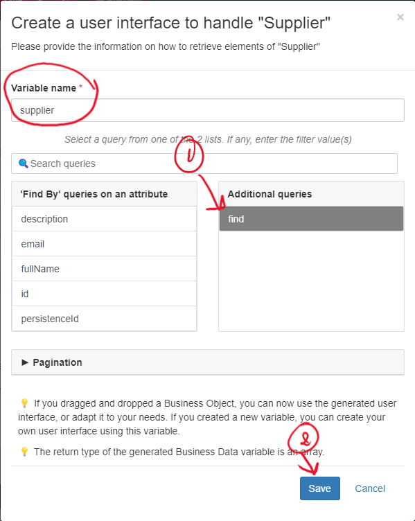
Now, you should modify the output to return the full name of the selected supplier.
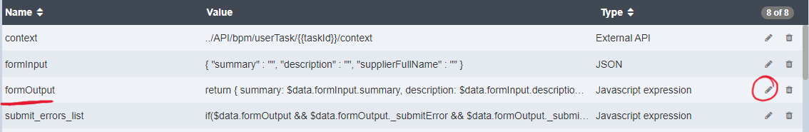
You should modify this output to include additional information.
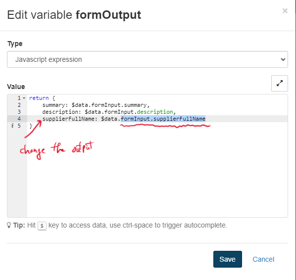
Add the new output (fullName selected by the user, not manually entered).
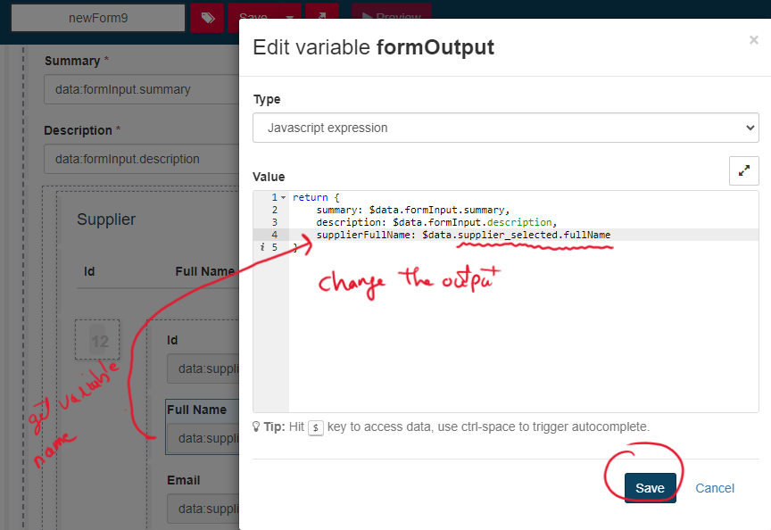
For the other activities, you don't need to retrieve data from the database. Instead, you can simply generate a form and change its name.
-
Activity "Complete quotation"
Please add a form for this activity.
-
Activity "Review quotation"
Please add a form for this activity.